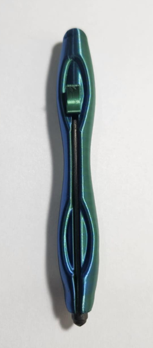
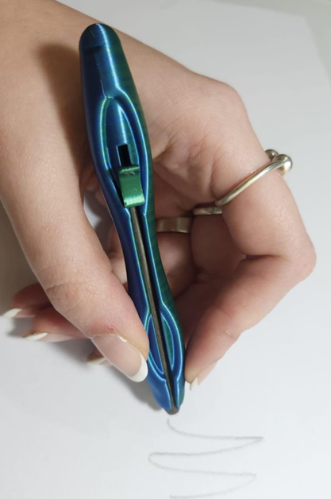
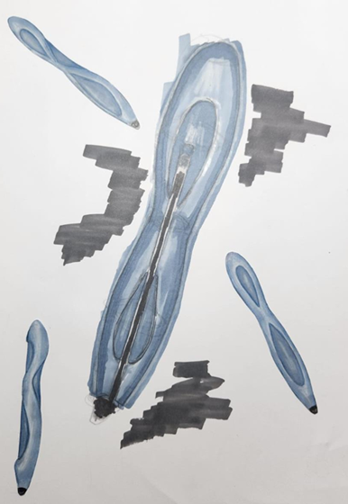
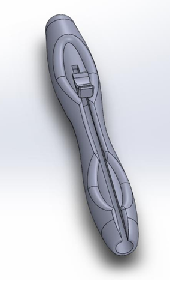
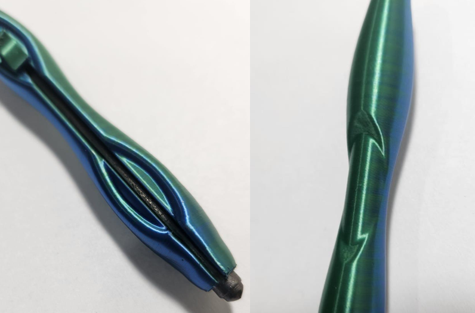
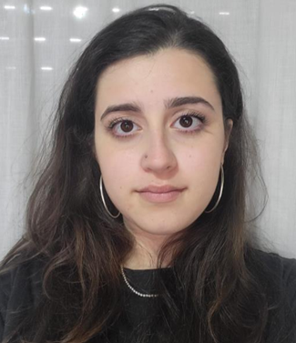

La propuesta
La propuesta surge a partir de la exploración formal de la Cinta de Möbius como analogía conceptual. Esta figura geométrica se caracteriza por poseer una única superficie continua y un recorrido sin principio ni fin, conceptos que fueron trasladados al diseño del portaminas con el objetivo de generar una identidad morfológica propia y coherente.
A partir de esta analogía se desarrolló una forma orgánica y torsionada, donde las superficies parecen fluir de manera continua a lo largo del objeto. La intención fue alejarse de los cuerpos cilíndricos convencionales para crear una herramienta que exprese movimiento, continuidad y dinamismo, manteniendo al mismo tiempo una lectura clara y una estética limpia.
El diseño busca comunicar fluidez, creatividad y libertad de trazo. La torsión presente en el cuerpo genera una percepción de movimiento constante, reforzando la idea de un recorrido infinito inspirada en la Cinta de Möbius. A nivel visual, la continuidad de las superficies evita interrupciones bruscas y construye una imagen unificada del producto.
Desde el punto de vista funcional, el portaminas está destinado principalmente a estudiantes y profesionales vinculados al diseño, donde el bocetado constituye una parte fundamental del proceso proyectual. Las curvas del cuerpo generan zonas de apoyo para los dedos, acompañando de forma natural el gesto de escritura y dibujo. De esta manera, la morfología no solo responde a una búsqueda estética, sino también a una intención ergonómica.
La propuesta fue pensada para ser fabricada mediante impresión 3D, aprovechando la libertad formal que ofrece esta tecnología para materializar geometrías complejas y superficies continuas. Esto permitió desarrollar una pieza con transiciones suaves y una estructura coherente con el concepto inicial.
En síntesis, el proyecto busca transformar una idea abstracta, “Acompañar el flujo del boceto”. A través de una forma dinámica y orgánica, el diseño propone una experiencia que combina funcionalidad, identidad y expresión formal, convirtiendo al portaminas en una herramienta que acompaña el proceso creativo y refleja los valores del diseño contemporáneo.
Técnica, materiales y procedimiento
El desarrollo comenzó con bocetos explorando formas inspiradas en la Cinta de Möbius. A partir de estas propuestas se seleccionó una alternativa y se modeló digitalmente en un software Solidword. Posteriormente, el modelo fue preparado para impresión mediante un software de laminado, definiendo parámetros de fabricación. Finalmente, se realizó la impresión 3D de la pieza para obtener el prototipo final.
Reflexión de la actividad
El desarrollo del portaminas permitió comprender cómo una idea conceptual puede transformarse en un producto concreto. A partir de la analogía con la Cinta de Möbius, fue posible explorar la relación entre forma, función y usuario, generando una propuesta con identidad propia. Además, el proyecto ayudó a profundizar conocimientos sobre modelado, fabricación mediante impresión 3D y procesos de diseño, destacando la importancia de la experimentación y la coherencia conceptual durante todo el desarrollo.
Galería del portaminas






Propuesta realizada por Cichero Gonzalo Julián en el marco de Taller de Diseño Industrial IV - Orientación Máquinas y Herramientas, de la Licenciatura en Diseño Industrial UNLa, junto con el LAD (Laboratorio de Diseño).